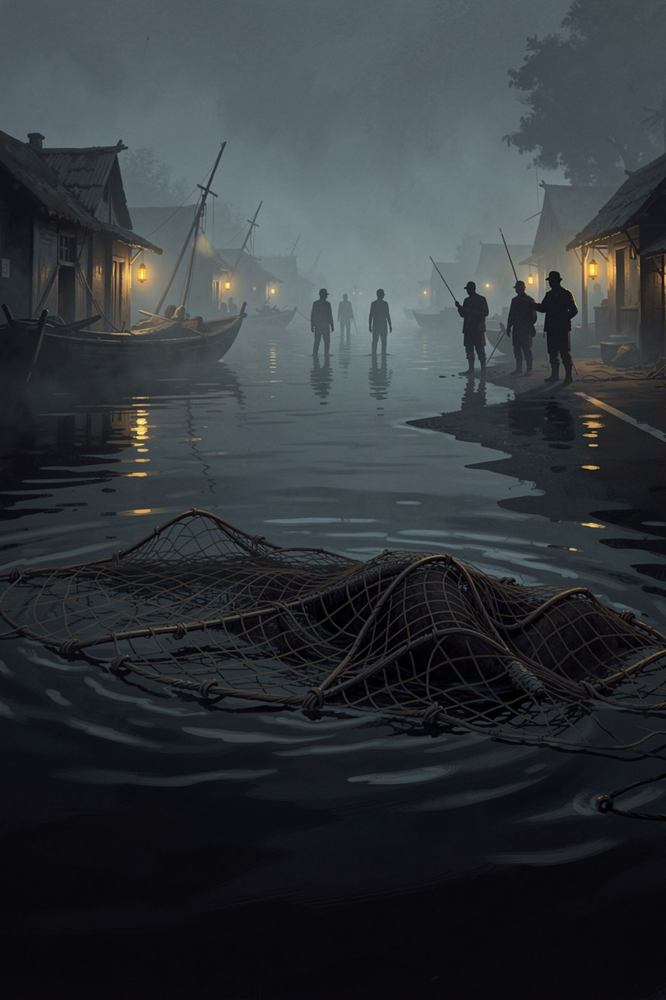
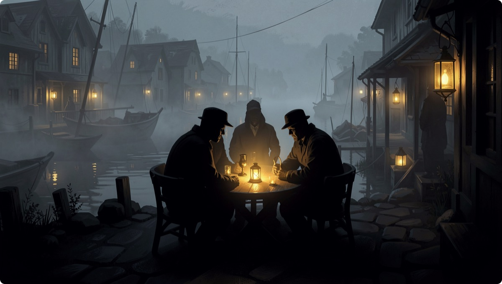
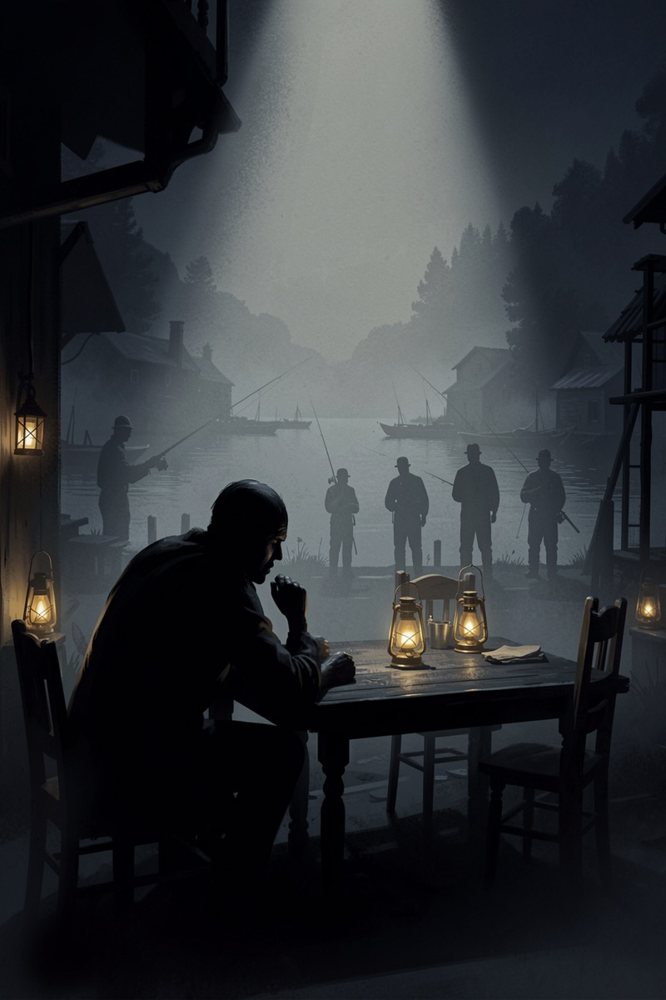
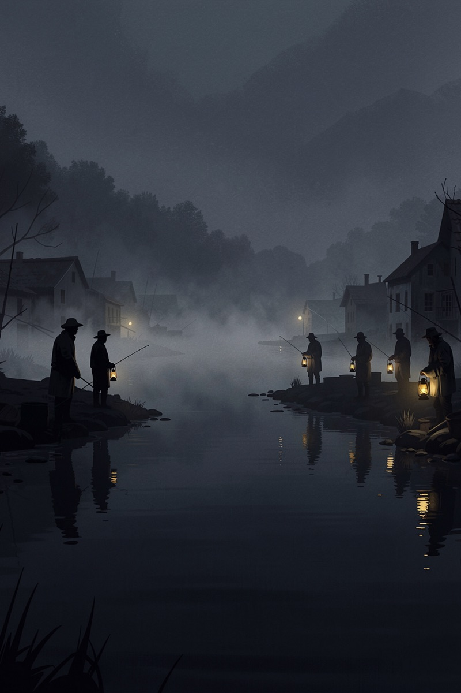

一期只审一案。本案暂不开奖——悬案最好看的时候,就是悬而未决的时候。
状态:过秤中 · 初读已现2024 年,NeurIPS(AI 顶会)上一篇论文做了个狠实验:让 5 个 AI 共享一个鱼塘,每月各自决定捕多少,没人强制。塘有再生极限——大家克制,年年有鱼;有人贪,塘崩全完。
从那以后,"AI 管不住共享资源"成了默认设定:讲 AI 风险的引用它,讲多 agent 系统的引用它。但很少有人注意:那是 2024 年的模型考出来的成绩。

所有"AI 当管家"的想象——管预算、管库存、管排班、管电网——都踩在同一块地基上:几个 AI 共享一个有限资源时,它们守不守得住规矩?
如果守不住,上面的一切免谈;如果如今守得住了,那 2024 年的定论就是一张过期地图——而整个行业还在按过期地图开车。
"顶会论文 43/45 摆在那,这不是观点,是数据。"
"AI 本质是逐利优化器,贪是它的天性,演都演不久。"
"那是两年前的模型。2026 的模型连奥数都拿金牌了,算不出一个鱼塘的可持续上限?"
"现在的模型被专门训练过合作与无害,公地悲剧恰好是它们的主场。"
(两派均为论点归纳,不是实验数据——数据见第 05 节卷宗。)
① 多遍全报。同一个村,每家模型跑多遍,跑几次报几次——原论文有个被我们抓住的把柄:疑似跑了多次、只发"有代表性的一次"。我们反着来,全部底牌上桌。
② 改题防背书。这套渔村题公开两年,模型可能背过答案。我们改塘容、改人数,让正确答案不再是原题的数——真会算的照样满分,背书的当场现形。
③ 嘴手两本账。会上承诺几吨、实际捞几吨,是两条独立日志。说 10 捞 15 = 作弊,人赃并获,不靠主观打分。

四家初读都守住了塘——但一次不算数。秤已经造好:2024 年的定论和 2026 年的初读,总有一个要让位。开奖那天,墙上见。

